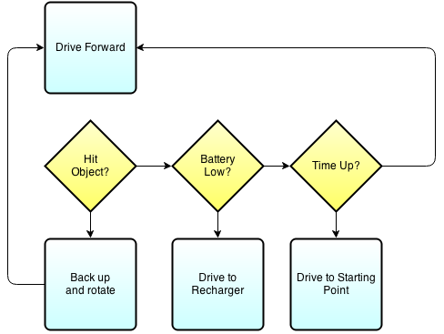
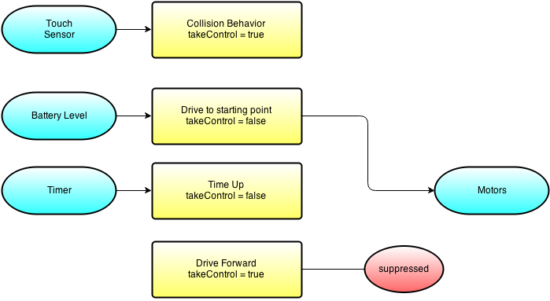

Getting Groovy with Lego Mindstorms
Learn how to get your Groovy on with Legos!
Created by Ryan Vanderwerf / @RyanVanderwerf
 +
+ About Me
- Chief Architect @ ReachForce
- Father of 2 girls under 10
- Co-Chair Austin Groovy and Grails User Group
- Help maintain Grails Quartz plugin
- Maintain GVPS Plugin (Grails Video Pseudo Streamer)
- Maintain Struts-1 Plugin
- Submit pull requests for others when I can!
What we will cover
- What is the EV3?
- What is leJOS?
- Layout and components of leJOS
- Programming Model
- How build components of leJOS with Gradle
- Overview of leJOS APIs
- Run some demo apps on leJOS
- Build and deploy a demo leJOS Groovy App
- More advanced topics - Sensors and Events
- Let's add some sensors to our apps we've built!
- WebRover 1 - Build, Run, and Play!
What is EV3?
EV3 is the latest generation LEGO Mindstorm Platform
TI ARM9 Core CPU (Runs ARMv5 instruction set)
64MB RAM
16gb internal flash
microSD slot
bluetooth wireless
usb port
New generation of 'smarter sensors' (single sensors replace many nxt ones)
One big difference vs Raspberry Pi is it is a ARM11 with ARMv7 instruction set with hardfp(w/jdk!)
What is leJOS?
leJOS is a Java-based implemention that started on the lego mindstorm RCX platform that runs on arm based processors. leJOS was forked oringally from the 'TinyVM' project in 2000.
Available in 3 flavors: RCX, NXJ, and EV3 that are all still maintained
What is LeJOS?
- Replacement firmware for building Lego Robots in Java
- PC Tools for flashing Lego Brick
- PC Apps to communicate to your robot from your PC via bluetooth, Wifi, USB
- Creates a running jar package to deploy on your robot for execution
Why no Groovy before now?
- Groovy was too slow before @StaticCompile (Soft FP)
- More limited audience
- Many Java people still not educated on Groovy(but this has grown!)
- leJOS didn't provide an easy way to run Groovy(core commiters indifferent to Groovy)
Layouts and components of leJOS
- OS Image
- DBusJava
- EV3 Classes
- EV3 Menu
- Other components
OS Image
This is the base linux install image leJOS runs on
- Runs minimal OS and kernel - only subset of basic shell options and commands available
- On code drop on your usb key, located in /ev3snapshot
- On Windows there is a exe installer
- On Linux or Mac, write sd500.img to your microSD card, then unzip sdcard/lejosimage.zip to roots
- Other components
OS Image
Runs minimal OS and kernel - only subset of basic shell options and commands available
- shell is 'ash' nowhere near feature comparable to bash
- ps command only has 1 parameter 'w' for wide
- leJOS interacts with it by starting up a java app called 'EV3Menu'
- There isn't really enough RAM to run more than 1 VM besides what leJOS uses (hello oom killer!)
DBusJava
JNI Layer that interacts with physical hardware
- This is the glue to makes JVM classes work
- Generally you don't need to do anything with it unless you are adding unsupported hardware
- see the README file under DBusJava/src for how to add modules (outside scope of us here)
- Feel free to use the artifact on my Bintray account, compile your own with the scripts, or use your own artifact server
EV3Classes
Supporting Java classes for leJOS
- This is all the Java implementation classes for the system
- This is a monolithic code base/lib at this point all projects depend on this to work
- I've created some custom classes inside here to allow the Webrover to work (later)
- Divided into 4 sections - Hardware, Internal, Robotics and Utility
- Hardware - Java representation of the lego hardware items
EV3Classes
Hardware
- Support for Tetrix metal robots
- Supports motors from EV3, NXT, RCX, Mindsensors Glidewheel-M, regulated and unregulated
- Supports GPS with this device http://www.dexterindustries.com/dGPS.html
- Ports - these are there the low level devices sensors are connected to (Mostly I2C/UART)
- Sensors - supports over 40 different kinds of sensors from Lego, Dextor, HiTechnic and Mindsensors
- LocalEV3 is the singleton class to get access to things (show example in code)
- Basic hardware objects on EV3 brick itself are in lejos.hardware base pkg (Audio, LCD, buttons and keys)
EV3Classes
Internal
- Handles bluetooth pairing with DBusJava
- Internal EV3 implementation classes not part of public API
- Low level linux hardware access classes (NIO)
- If you use the classes they are subject to change without and kind of deprecation or notice
EV3Classes
Remote
- Mainly uses RMI
- RemoteEV3 is main classes to access remotely (give it IP address)
- Accessing hardware remotely pretty much as a 1:1 relation with 'Remote' in front of classs
- Wifi support most stable
- Bluetooth is not working, but not considered 100% stable
- When accessing ports, you must pass in the the proper 1 or 2 letter names (S[1-9] or letter A-F on motor ports
- Let's look at some RemoteEV3 code usage!
EV3Classes
Robotics
- The fun stuff! Doing something with all of these classes, sensors and motors
- filters - filters for sample providers such as SumFilter which takes the sum of samples over time, or MedianFilter
- geometry - geometric shape support using float co-ordinates
- localization - BeaconPoseProvider, CompassPoseProvider, MCLPoseProvider, OdometryPostProvider
- mapping - adds support for maps- Main class is EV3NavigationModel which takes Pilot, Navigator, PoseProvider, RangeScanner, FeatureFinder
EV3Classes
Robotics - continued
- navigation - classes for physically navigating the robot around - DifferentialPilot, SteeringPilot, OmniPilot
- object detection - Feature detector, Fusor detector, RangeFeature, and TouchFeature
- pathfinding - most of these use a map to determine a path for the robot to take (Dijkstra, Random, Shortest, Node)
- subsumption - Arbitrator and Behavior
EV3Classes
Utilities
- general utility classes - things like Timers, property mgt, delays, debugs
Programming Model
Behavior Programming
- Why? Creates less spaghetti code of if-then-else statements
- Uses threads to keep multiple things going on to allow different 'behaviors' to react
- Interface uses only 3 methods - action, suppress, and takeControl
- Uses to main Interfaces - Behavior and Artibrator
Programming Model
Behavior Programming
Programming Model
Behavior Programming - continued
- Artibrator takes over from your 3 behavior classes after they are complete
- Artibrator regulates when behaviors become active
- Enter and escape will stop unless returnwheninactive is set upon creation
- Takes an array of behaviors
Programming Model
Behavior Programming - continued
- Simple to use, only method is start() - higher level behaviors suppress lower ones
- The array of behaviors passed in, index order determines priority of arbitrator to control behaviors
- Recommended design pattern - define boolean flag 'supppressed' for each behavior, set variable to true by supress method, test in each action method. first thing in action method is to set this to false
- Action must be coded for prompt exit from method
Programming Model
Behavior Programming - suppression
Programming Model
Let's work on our example!
Slides
Not a coder? No problem. There's a fully-featured visual editor for authoring these, try it out at http://slid.es.
Point of View
Press ESC to enter the slide overview.
Hold down alt and click on any element to zoom in on it using zoom.js. Alt + click anywhere to zoom back out.
Works in Mobile Safari
Try it out! You can swipe through the slides and pinch your way to the overview.
Marvelous Unordered List
- No order here
- Or here
- Or here
- Or here
Fantastic Ordered List
- One is smaller than...
- Two is smaller than...
- Three!
Transition Styles
You can select from different transitions, like:
Cube -
Page -
Concave -
Zoom -
Linear -
Fade -
None -
Default
Themes
Reveal.js comes with a few themes built in:
Default -
Sky -
Beige -
Simple -
Serif -
Night
Moon -
Solarized
* Theme demos are loaded after the presentation which leads to flicker. In production you should load your theme in the <head> using a <link>.
Global State
Set data-state="something" on a slide and "something"
will be added as a class to the document element when the slide is open. This lets you
apply broader style changes, like switching the background.
Custom Events
Additionally custom events can be triggered on a per slide basis by binding to the data-state name.
Reveal.addEventListener( 'customevent', function() {
console.log( '"customevent" has fired' );
} );
Slide Backgrounds
Set data-background="#007777" on a slide to change the full page background to the given color. All CSS color formats are supported.
Image Backgrounds
<section data-background="image.png">Repeated Image Backgrounds
<section data-background="image.png" data-background-repeat="repeat" data-background-size="100px">Background Transitions
Pass reveal.js the backgroundTransition: 'slide' config argument to make backgrounds slide rather than fade.
Background Transition Override
You can override background transitions per slide by using data-background-transition="slide".
Clever Quotes
These guys come in two forms, inline:
“The nice thing about standards is that there are so many to choose from”
and block:
“For years there has been a theory that millions of monkeys typing at random on millions of typewriters would reproduce the entire works of Shakespeare. The Internet has proven this theory to be untrue.”
Pretty Code
function linkify( selector ) {
if( supports3DTransforms ) {
var nodes = document.querySelectorAll( selector );
for( var i = 0, len = nodes.length; i < len; i++ ) {
var node = nodes[i];
if( !node.className ) {
node.className += ' roll';
}
}
}
}
Courtesy of highlight.js.
Intergalactic Interconnections
You can link between slides internally, like this.
Fragmented Views
Hit the next arrow...
... to step through ...
any type- of view
- fragments
Fragment Styles
There's a few styles of fragments, like:
grow
shrink
roll-in
fade-out
highlight-red
highlight-green
highlight-blue
current-visible
highlight-current-blue
Spectacular image!

Export to PDF
Presentations can be exported to PDF, below is an example that's been uploaded to SlideShare.
Take a Moment
Press b or period on your keyboard to enter the 'paused' mode. This mode is helpful when you want to take distracting slides off the screen during a presentation.